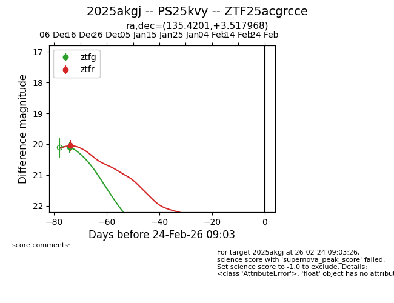
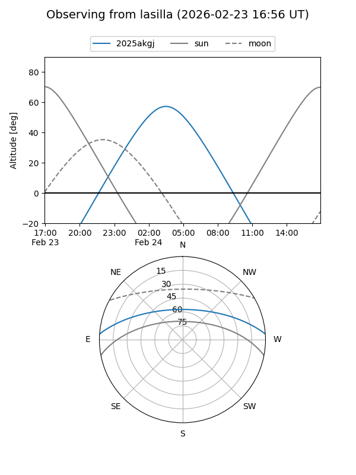
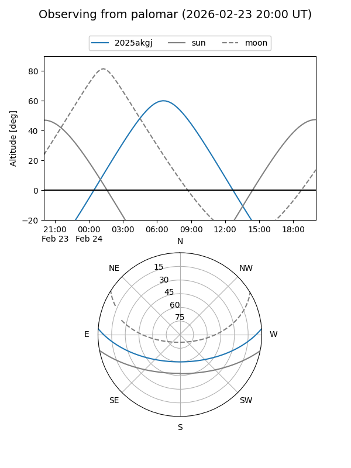

2025akgj
Target 2025akgj at 2025-12-31 17:00
Aliases and brokers:
FINK:
Lasair:
ALeRCE:
TNS:
YSE:
alt names
ZTF25acgrcce (ztf,fink_ztf)
2025akgj (tns,yse)
PS25kvy (panstarrs)
Coordinates:
equatorial (ra, dec) = 135.4201,+3.51797
equatorial (HMS+DMS) = 09:01:40.83,+03:31:04.69
galactic (l, b) = (225.6807,+30.40185)
Flags:
Photometry:
last ztfg=20.10, ztfr=20.05
1 ztfg, 1 ztfr detections
Lightcurve

Visibility


Additional plots